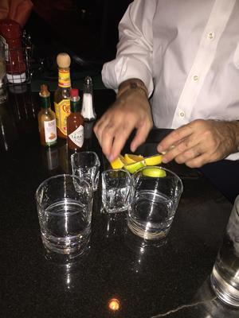

Joining the Order
The sacred Order of the Wagdog tradition is upheld at all toxicology events where our Lord Wagner is present. Disciples are inducted into the Order when they consume a wagdog in the presence of his Holiness our Lord Wagner. To declare your intent to become a disciple contact Sarah the High Priestess of the Order of the Wagdog here. Once you contact the High Priestess you will be notified via email of future opportunities for induction into the Order.